Cheese Factory · UX Designer · Internal Hackathon
Extending an Internal Idea-Submission Platform to Mobile in a 24-Hour Hackathon
01 · Overview
About the Cheese Factory
The Cheese Factory is an internal platform where any team member can submit an idea to improve any part of the business or facilities. Submitted ideas are vetted by a team to determine whether they're viable, already in progress, or already exist elsewhere in the organization without enough awareness. During an internal 24-hour hackathon, our team set out to design and build a mobile version of the platform to extend that process beyond the desktop.
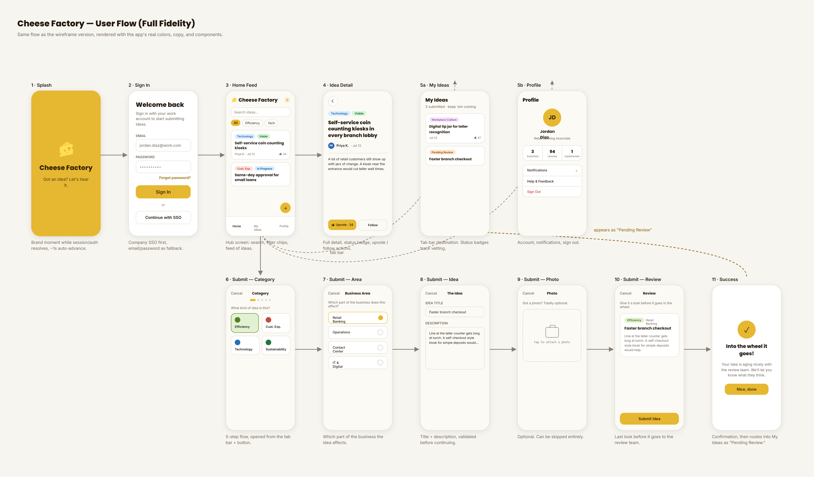
02 · The Problem
Ideas Don't Wait for a Desk
The existing Cheese Factory platform was desktop-only, which meant capturing an idea depended on remembering it until the next time someone sat down at a computer. Good ideas are often prompted by something happening in the moment: on the floor, in a conversation, out in the field. That context gets lost by the time a team member is back at their desk.
"Ideas don't always happen when one is at their desk, so we wanted to make sure that our team members have the opportunity to submit ideas whenever and wherever those ideas occur."
03 · Approach
A Mobile Extension, Built in a Day
Working within the constraints of a 24-hour internal hackathon, our team designed and built a mobile solution that extended the Cheese Factory's core idea-submission flow rather than reinventing it, giving team members a fast, low-friction way to capture an idea the moment it occurred, from wherever they were. We started by mapping the full flow at low fidelity to lock the structure early, then spent the rest of the day designing every screen at full fidelity so the prototype felt like a real, shippable product by the end of the event.
Porting the desktop workflow over as-is would have missed what mobile could actually offer, so we adapted it to take advantage of the device itself. The submission flow was reworked around quick access to the camera and photo library, letting someone snap a picture of whatever prompted the idea, an unkept area, a confusing sign, an area that could use improvement, and attach it on the spot rather than trying to describe it later from a desktop.
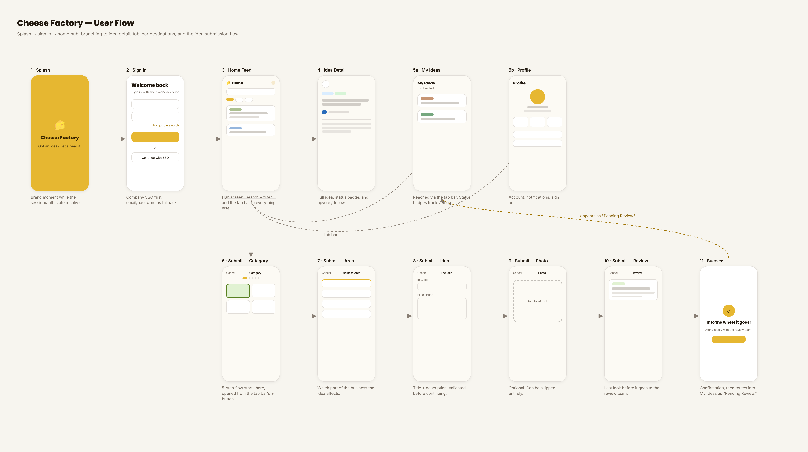
04 · The Flow
From Sign-In to Submission
A branded splash screen covers the app while the session resolves, then hands off to sign-in. Company SSO is presented first, with email and password as a fallback. From there, users land on a home feed that acts as a hub: a search and filter bar up top, a scrollable list of ideas below, and a tab bar to everything else in the app. Tapping into an idea surfaces its full detail, status badge, and the ability to upvote or follow it, while the tab bar also branches out to My Ideas, a personal list with status badges tracking each submission through vetting, and a Profile screen for account and notification settings.
Submitting a new idea is a five-step flow opened from the tab bar's + button: pick a category, choose which business area the idea affects, write a title and description, optionally attach a photo, and review before sending it off. A success screen confirms the submission and routes it straight into My Ideas as Pending Review, so the idea is never lost in the moment it was captured.
05 · Key Screens
Screen by Screen
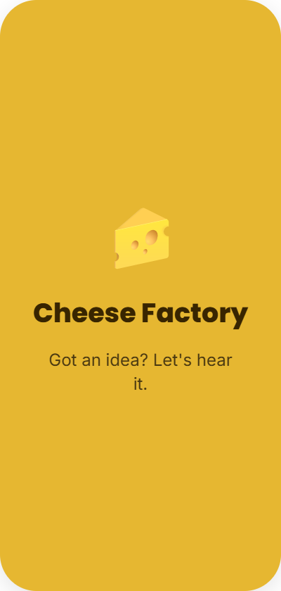
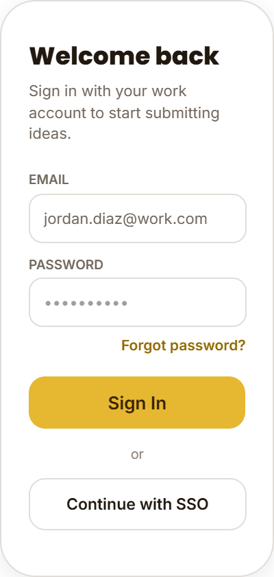
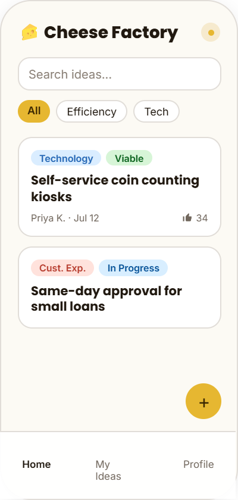
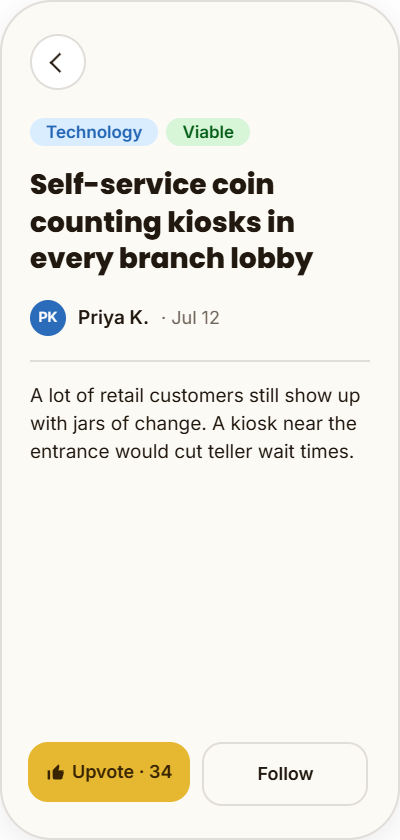
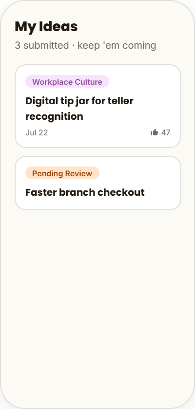
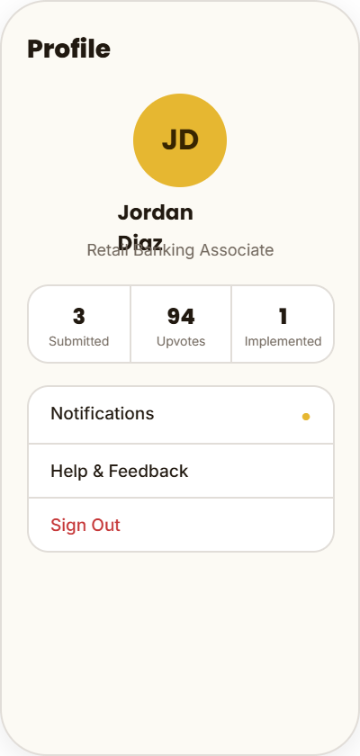
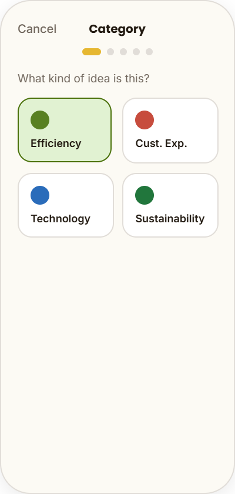
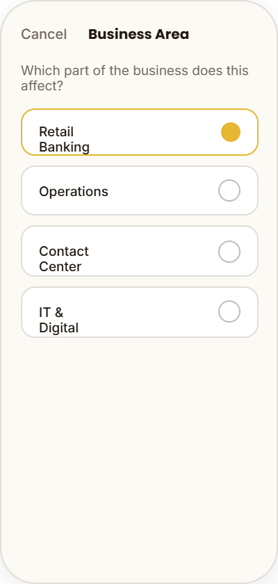
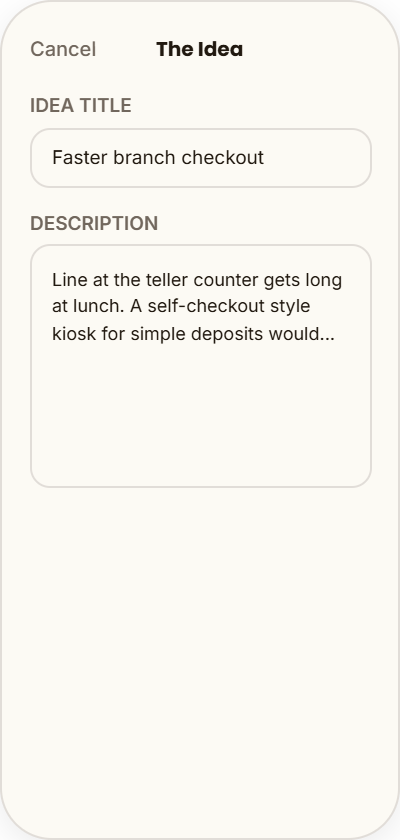
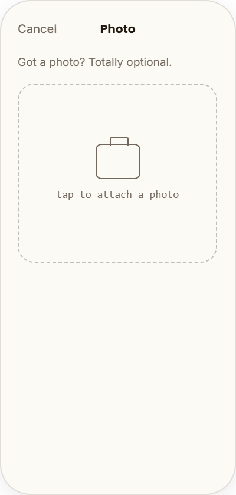
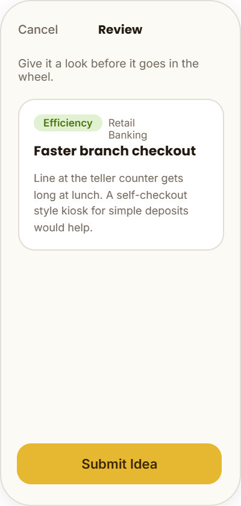
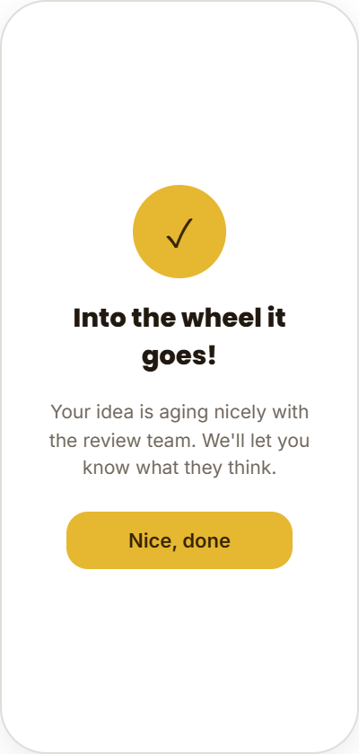
06 · Outcome
From Hackathon Prototype to Shipped Feature
The mobile Cheese Factory placed second at the internal hackathon. Beyond the event itself, the concept held up well enough that it was implemented for team members to use, giving the idea-submission process the mobile presence it was missing.
Results
- 2nd place finish among the internal hackathon's submissions.
- Implemented for team members, taking idea submission beyond the 24-hour prototype.